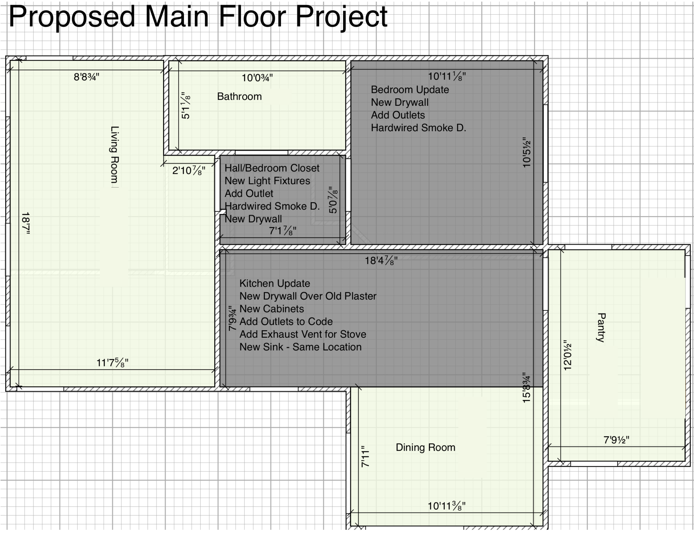
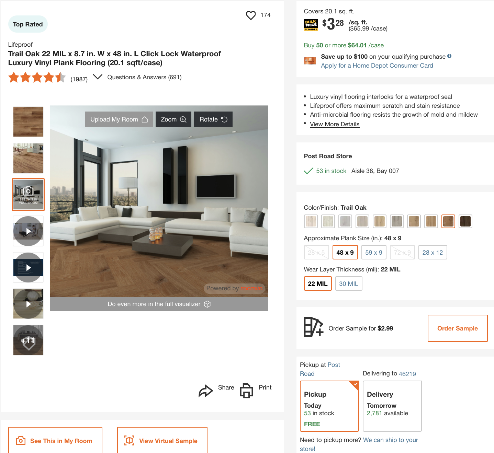

Flooring Project Scenario: The Unhappy Client
You are a project manager for a flooring installation company. A client has expressed dissatisfaction with the color of the recently installed luxury vinyl plank (LVP) flooring.
Below is a brief scene that takes place during the installation. After reading the scene, your task is to develop a plan to address the client’s concern while maintaining the profitability of the project.
Before making your decision, list any assumptions you are making about the situation. Justify your final decision based on these assumptions and the potential risks and benefits of your chosen course of action.
Visual Aids

Figure 1: Proposed Main Floor Project Plan

Figure 2: Example of Luxury Vinyl Plank Product
Screenplay: The Unhappy Client
INT. LIVING ROOM - DAY
Sunlight streams through windows. LUXURY VINYL PLANK flooring is being installed. Two half-full boxes of planks lie open.
Two WORKERS, mid-twenties, move efficiently, laying down and securing the planks.
MR. ROBESON, 50s, impeccably dressed, enters. He watches the workers with a critical eye.
MR. ROBESON
Looking good, fellas. Good work.
WORKER 1
Thanks, Mr. Robeson. Almost done with this room.
Mr. Robeson nods approvingly, pulls out his phone, and snaps a picture of the LVP flooring.
MR. ROBESON
Hmm, let me just... (He steps outside the room, muttering into his phone) ...no, I don't think so. It's too... I don't know... bright. (He returns to the room, looking shifty)
MR. ROBESON
(Clears throat) Say, fellas, I don't think this color is quite right. It's a bit... much. What can we do about it?
The WORKERS exchange a worried glance.
FADE OUT.